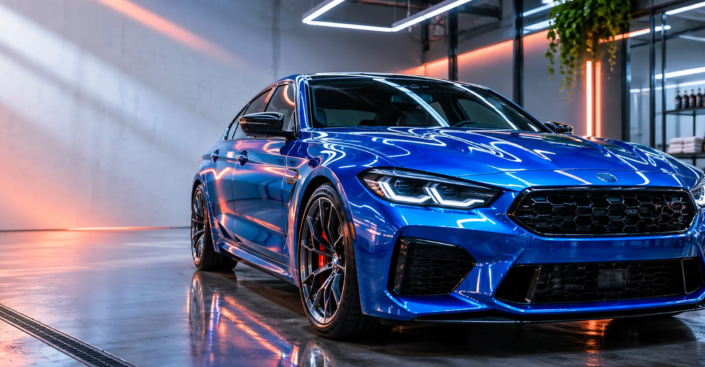
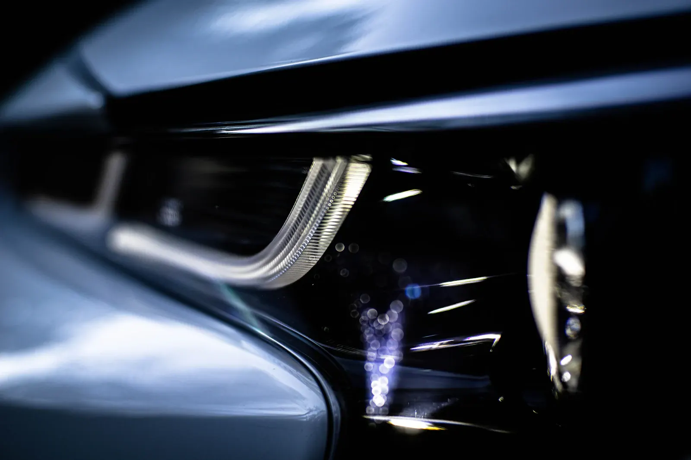
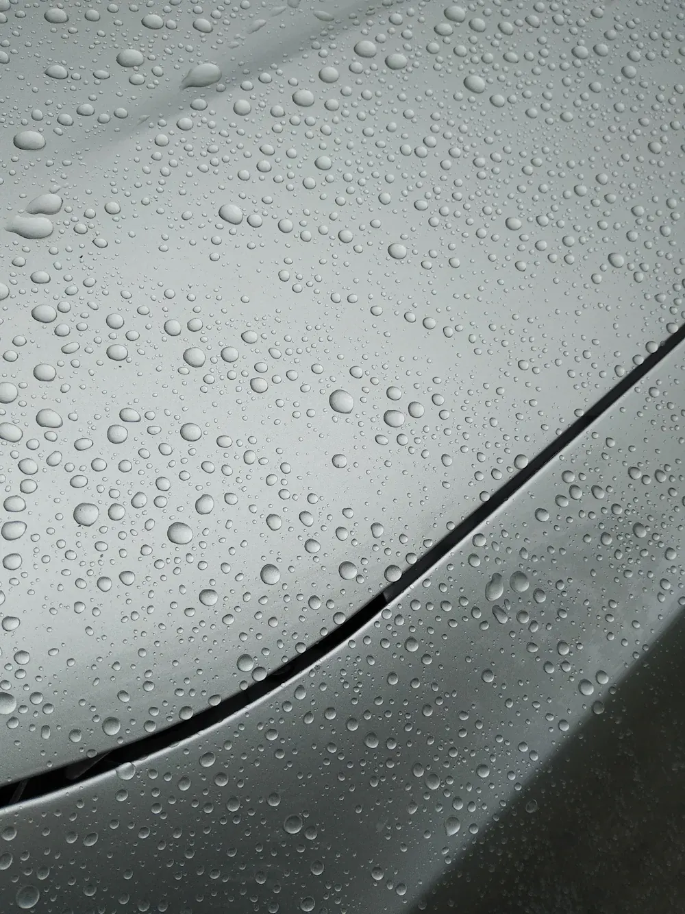
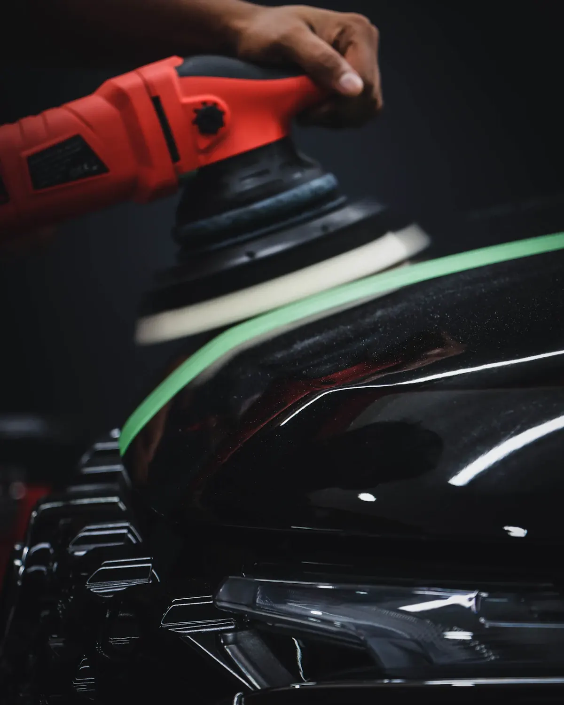
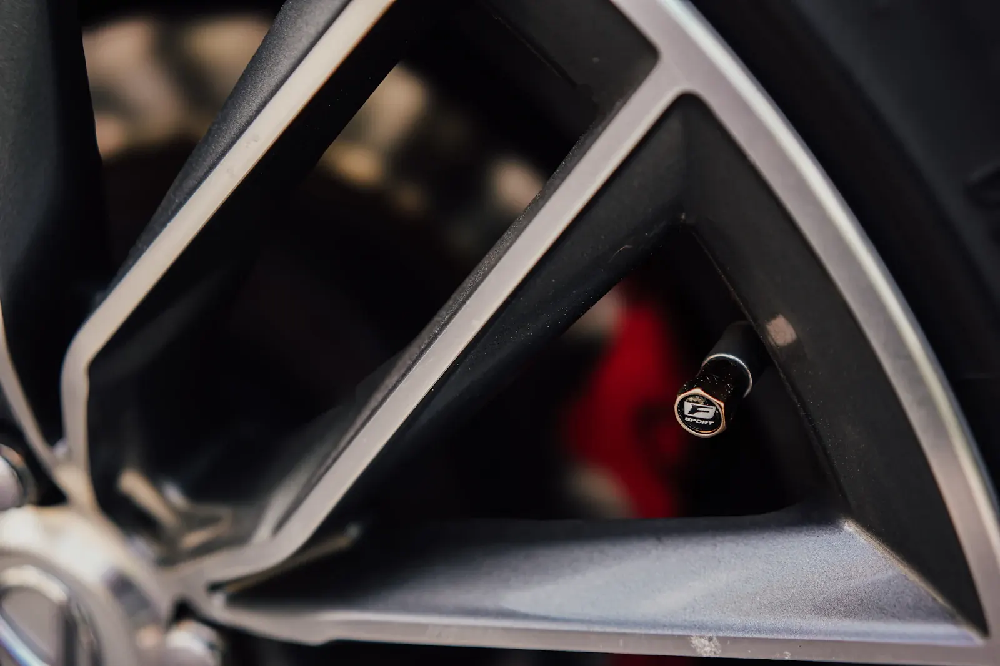

Seu carro em outra frequência.
Estúdio de estética e detalhamento automotivo. Polimento, proteção de pintura, rodas e interior, com o cuidado combinado para o seu carro.
Toque no carro. Veja o cuidado.
Cada ponto abre o que o estúdio faz naquela região. Troque entre a parte externa e o interior para ver os quatro cuidados.
Toque nos pontos sobre a foto. Fotografias ilustrativas.
O cuidado se vê de perto: pintura, vidro, aro e acabamento.
O trabalho muda conforme a superfície. Estas imagens mostram o tipo de material e de procedimento com que o estúdio trabalha.




Vamos conversar sobre o seu carro.
Conte o que você quer cuidar. O estúdio avalia o carro e combina serviço, valor e data com você.
Sua mensagem